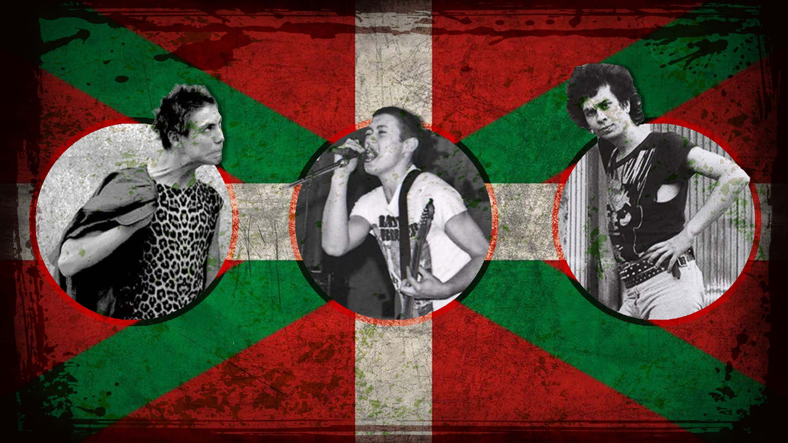

El Punk es un genero que aparecio a mediados de los 70 en Reino Unido como respuesta a la industria musical de la epoca, la politica del momento especialmente las leyes de Margaret Tatcher y la falta de esperanza de la juventud por un futuro

A mediados de los 70 el punk se extendio por todo el mundo, tomando mas fuerza en Estados Unidos y España, en este ultimo pais creandose un movimiento que seria nombrado como Rock Radical Vasco
